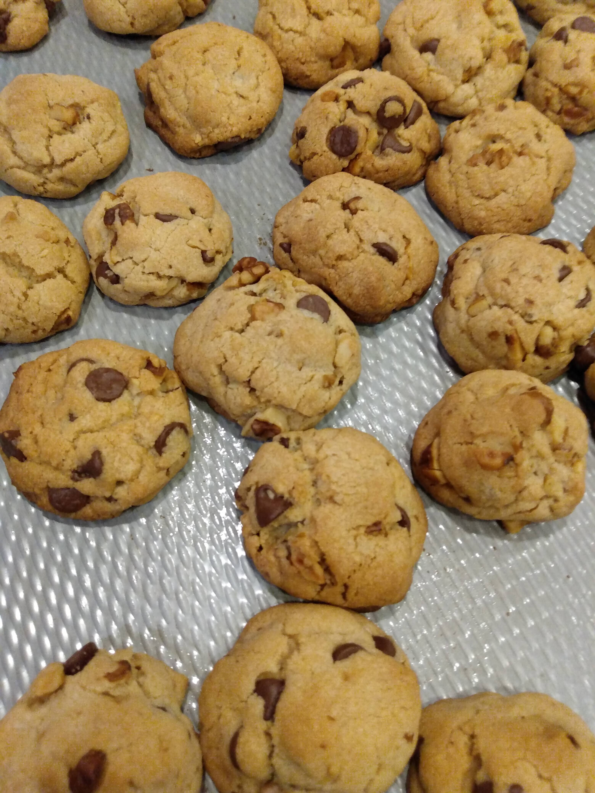

Chocolate chip cookies
Source: based on https://www.keyingredient.com/recipes/107617810/chocolate-chip-cookies-betty-crockers-1969-recipe/
Serving size: around 30 cookies
Cookies. Yum.
Ingredients
- 1/3 cup butter
- 1/3 cup shortening
- 1/2 cup granulated sugar
- 1/2 cup brown sugar
- 2 tsp vanilla extract
- 1 egg
- 3/2 cups flour
- 1/2 tsp baking soda
- 1/2 tsp salt
- About a cup of chopped walnuts
- Chocolate chips
Instructions
Mix ingredients in the order they're listed above. Add as many walnuts and chocolate chips the dough can hold. Roll doough into balls, toss them on an insulated baking sheet (so they don't burn on the botton), and bake at 375°F for about 10 minutes, until done around the edges but still gooey in the middle.